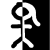
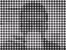
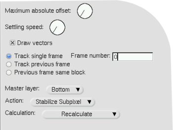

mututu txandakaria. Honela,
mututu gaituta duen pista ez da irteeran nahastuko.
mututu txandakaria. Honela,
mututu gaituta duen pista ez da irteeran nahastuko.
| [ << ] | [ >> ] | [Top] | [Contents] | [Index] | [ ? ] |
Efektu hauek eragiten duten pisten azpian jartzen dira geruzetan. Hauek pista prozesatzen dute pista erreproduzitzen ari denean, baina ez dira irteeran gordetzen. Proiektua errendatzean efektu hauek gordetzen dira irteeran.
Denbora errealeko efektu guztiak baliabideen leihoan zerrendatzen dira, bi taldetan banatuta: audioaren efektuak eta bideoaren efektuak. Audioaren efektuak audio motako pistetara arrastatu behar dira baliabideen leihotik. Bideoaren efektuak bideo motako pistetara arrastatu behar dira.
Helburuko pistan datuak egonez gero, efektua pista osoari aplikatuko zaio. Pistan daturik ez balego, efektua ezabatu egingo litzateke. Pistaren eskualde bat hautatuta egonez gero, efektua eskualdean itsatsiko da (berdin dio eskualdean daturik dagoen edo ez).
Efektu batzuk ez dute datuak prozesatzen, sintetizatu egiten dituzte. Sintesiaren efektuaren kasuan, pistaren eskualde bat hautatu eta horrela arrastatzearen eragiketak bertan itsatsiko du efektua datuak ezabatu gabe.
Pista baten gainera efektu bat baino gehiago arrastatzean, pistaren behean efektuak geruzetan ikusiko dituzu goitik beherako ordenean. Pista erreproduzitzen denean, efektuak goitik behera prozesatzen dira. Gaineko efektuaren irteera azpikoaren sarrera izatera bihurtuko da, eta horrela bata bestearen ondoren.
Pista bati efektuak aplikatzeko beste bide bat laster-menua erabiltzea da. Saguaren eskuineko botoiarekin klik egin pistaren gainean eta hautatu Erantsi efektua laster-menuan. Efektua eransteko elkarrizketa-koadroak arrastatu eta jaregin metodoak baino kontrol gehiago eskaintzen dizu. Elkarrizketa-koadro honek bi efektu mota gehiago eranstea uzten dizu: partekatutako efektuak eta partekatutako pistak. Hautatu plugin bat Plugin-ak zutabean eta plugin-en zutabearen azpian dagoen Erantsi botoia sakatu (hautatutako plugin-a eransteko). Efektu hori baliabideen leihotik arrastatutako efektuaren berdina izango da.
Pista batek efektu bat badu, efektua konfiguratzea komeni da. Joan efektura eta saguaren eskuineko botoiarekin egin klik efektuaren laster-leihoa bistaratzeko. Efektuaren laster-leihoan Erakutsi aukera dago. Aukera honek efektuaren interfazea kurtsorearen azpian bistaratzea eragiten du. Efektu gehienek interfazea eduki arren, batzuk ez daukate interfazerik. Efektuak ez badu interfazerik, ez da ezer erakutsiko Erakutsi aukera hautatzean. Efektuaren interfazean parametroak doitzean, efektuaren iraupen osoari eragin ohi diote parametroek.
Erantsi efektuaren elkarrizketa-koadroak onartzen dituen beste bi efektu mota efektu birziklatuak dira. Efektu birziklatuak erabiltzeko, hiru betekizun bete behar dira:
Partekatutako efektu baten kasuan, baldintza hauek egia izan behar dute. Partekatutako pista baten kasuan, efektua eransten ari zaren pistaren mota berdineko beste pista bat egon behar da denbora-lerroan. Bideoaren pista baten gainean saguaren eskuineko botoiarekin klik egiten baduzu, partekatutako pista zutabean ez da ezer egongo beste bideo-pistarik ez badago. Audioaren pista baten gainean saguaren eskuineko botoiarekin klik egiten baduzu, partekatutako pista zutabean ez da ezer egongo beste audio-pistarik ez badago.
Partekatutako efektuak edo pistak erabilgarri badaude, Partekatutako efektuak eta Partekatutako pistak zutabeetan agertuko dira. Zutabe bakoitzaren azpian dagoen Erantsi botoiak zutabean nabarmendutako edozer erantsiko dio uneko pistari.
Partekatutako efektuek eta pistek gauza esklusiboak egitea uzten dute. Partekatutako efektu baten kasuan, partekatutako efektua jatorrizko efektuaren kopia bat bezala tratatzen da (partekatutako efektuak ordea ez dauka interfazerik bistaratzeko). Jatorrizko efektuaren interfazeak zehazten du partekatutako efektuaren konfigurazio guztia, eta jatorrizko efektuaren interfazea soilik bistara daiteke.
Partekatutako efektu bat erreproduzitzen denean, efektu normal baten antzera prozesatzen da, bere konfigurazioa ordea jatorrizko efektutik kopiatzen da. Efektu batzuk partekatuta daudela detektatzen dute, 'oihartzuna' edo 'konpresorea' efektuak bezala. Efektu hauek zein pista partekatzen ari diren zehazten dute, eta bi pista batera nahasten dute, edo pista bat erabiltzen dute balio bat gordetzeko. 'Oihartzuna' efektuak pistak batera nahasten ditu ingurua simulatzeko. 'Konpresorea' efektuak partekatutako pista bat erabiltzen du abiarazle gisa.
Jatorrizko pista batek partekatutako pista badu bere efektuen artean, partekatutako pista bera erabiliko da denbora errealeko efektu gisa. Normalean honi Lotutako pistak deitzen zaio, baina Cinelerra-k eragiketa berdina lortzen du partekatutako pista erantsiz. Partekatutako pistak dituen iraungitze eta beste edozein efektu jatorrizko pistari eragiten zaio. Partekatutako pista baten datuak prozesatutakoan, jatorrizko pistak partekatutako pistaren edozein efektu lantzen du, eta gero irteeran konposatzen du.
Gainera, partekatutako pistak jatorrizko pistaren irteera denbora errealeko
efektu gisa prozesatutakoan, partekatutako pistak bere burua irteeran nahasten du
panoramikoaren, moduaren eta proiektorearen ezarpenekin. Honela, bi pista nahasten dira
irteeran datu berdinekin. Gehienetan ez duzu nahiko partekatutako irteera jatorrizko
pistaren datu berdinekin irteeran nahasterik. Nahasketaren urratsa baino lehenago
gelditzea eta datuak jatorrizko pistari itzultzea nahiko duzu. Hau egiteko,
gaitu pista bakoitzaren mututu txandakaria. Honela,
mututu gaituta duen pista ez da irteeran nahastuko.
Demagun bideo bat sortzen ari zarela, eta partekatutako pista jatorrizko pistaren datuekin konposatzea nahi duzula irteeran bigarren aldiz. Bideoaren kasuan, partekatutako pistako bideoa beti agertuko da jatorrizko pistaren bideoaren azpian, baldin eta ez badago jatorrizko pistaren gainean denbora-lerroan. Partekatutako pistak erantsitako ordenean konposatzen dira. Jatorrizko pistaren zati denez, jatorrizko pista konposatu baino lehenago konposatu behar da partekatutako pista.
Eragiketa asko existitzen dira efektuak ikutzeko, behin efektuak denbora-lerroan daudela. Efektuak eta multimedia nahastea nahiko gauza konplikatua denez, efektuak editatzeko metodoak ez dira 'ebaki eta itsatsi' bezain labur eta zehatzak. Ediziotariko batzuk sarrerako/irteerako puntuak arrastatzeaz bat gertatzen dira, beste batzuk laster-menuen bidez, eta beste batzuk efektuak arrastatuz.
Pistak muntatzean, normalean, efektuek muntatze-erabakiei jarraitzen diete. Pista batetik ebakitzen baduzu, efektua murriztu egiten da. Sarrerako/irteerako puntuak arrastatzen badituzu, efektuak bere luzera aldatzen du. Portaera hau desgaitzeko hautatu Ezarpenak -> Editatu efektuak elementua proiektuaren leihoan.
Mugitu denbora-lerroko erakuslea efektuaren ertzen gainera, formaz aldatu arte (ezkerrera edo eskuinera tamainaz aldatzeko ikonoa, <= edo => bezalakoa). Egoera honetan, efektu baten amaiera arrastatzen baduzu, muntaketa bat lantzen da, pista baten amaiera arrastatzean gertatzen den bezala.
Pistaren iraupena aldatzeko hiru portaerak efektuaren iraupenari eta saguaren hiru botoiei lotuta daude, Interfazearen hobespenetan ezarri duzun arabera. See section Interfazea. Efektu baten iraupena lantzen duzunean, efektuaren muga mugitu egiten da beraren gainean arrastatzean. Pistaren muntaketan gertatzen ez den bezala, efektuak ez du jatorrizko luzerarik. Efektu baten luzera nahi haina zabal dezakezu mugarik jasan gabe.
Gainera, eta pistaren muntaketan gertatzen ez den bezala, arrastatze eragiketaren hasierako posizioak ez dio lotuta dagoen muntatze-erabakien zerrenda multimediari eragiten. Lotuta dagoen multimediaren efektuak ez dio efektuaren edizioari jarraitzen. Beste efektu batzuk, hala ere, efektu batean sortutako muntatze-erabakiei jarraitzen diete. Beste pistetako efektuekin lerrokatuta dagoen efektu baten amaiera arrastatzen baduzu, beste pistetako efektuak eraldatu egingo diren arren, multimediak berdin jarraituko du.
Zer gertatzen da sarrerako efektu baten amaiera doitzen baduzu, pistaren amaiera inguruko denbora asko eraginik gabe utziz? Kasu horretan, baliabideen leihotik beste efektu bat arrastatzen baduzu, efektu hori hutsik dagoen errenkadaren arean txerta dezakezu. Denbora errealeko efektuak errenkadetan antolatzen dira pistaren barruan. Errenkada bakoitzak hainbat efektu eduki ditzake.
Kasu batzuetan, efektuen errenkada bat soilik aldatzeko bere iraupena aldatzea nahi izan dezakezu. Horretarako, aurrenik txertatzeko puntua efektuaren hasieran edo amaieran kokatu. Gero, sakatu Maius tekla iraupenaren eragiketa hasten den bitartean. Metodo honekin eragiketak efektuen errenkada bakar bat aldatzen du.
Doitzeaz gain, efektuak gora edo behera eraman ditzakezu. Pista bakoitzak efektuen pila bat eduki dezake bere baitan. Efektu bat gora edo behera eramatean, pilan efektuak zein ordenetan prozesatuko diren aldatzen da. Joan efektu batera eta saguaren eskuineko botoiarekin bistaratu efektuaren menua. Eraman gora eta Eraman behera aukerek efektua gora edo behera eramaten dute.
Efektuak gora edo behera eramatean, kontu handiz ibili partekatutako efektuak gisa partekatuta egonez gero, eragiketa hauen ondoren edozein erreferentzia efektu desberdin batengana jo baitezake.
Azkenik, efektuak ere arrasta daitezke. Efektuak arrastatzea planoak arrastatzea
bezalakoa da. Hautatu  gezia
'arrastatu eta jaregin' moduan sartzeko efektuak arrastatu baino lehen. Efektuak
multimediaren mugetara, efektuen mugetara eta pistetara atxiki daitezke. Argi ibili
gauza batekin, erreferentzia bat partekatutako efektu batera arrastatzen baduzu,
erreferentziak okerreko efektura zuzenduko du hasieran erreferentziatutako efektua
arrastatu ondoren.
gezia
'arrastatu eta jaregin' moduan sartzeko efektuak arrastatu baino lehen. Efektuak
multimediaren mugetara, efektuen mugetara eta pistetara atxiki daitezke. Argi ibili
gauza batekin, erreferentzia bat partekatutako efektu batera arrastatzen baduzu,
erreferentziak okerreko efektura zuzenduko du hasieran erreferentziatutako efektua
arrastatu ondoren.
Efektu baten gainean saguaren eskuineko botoiarekin klik egitean efektuaren laster-menua bistaratuko da. Hautatu Erantsi elementua efektua aldatzeko, edo erreferentzia aldatzeko (partekatutako efektua bada).

Ordenagailuen zientziaren esperientziaren aurka, audioaren konpresoreak ez du audioa gordetzeko behar den datu kopurua murrizten. Audioaren konpresoreak audioaren barruti dinamikoa murrizten du. Cinelerra-n konpresoreak zabaltzearen eta konpresioaren funtzioak lantzen ditu.
Uneko posizioaren denbora-periodo zehatz batean dagoen gehienezko soinu-maila kalkulatuz lan egiten du konpresoreak. Gehienezko soinu-maila sarrerako soinu-maila gisa hartzen da. Sarrerako soinu-maila bakoitzak irteerako soinu-maila bat du, erabiltzaileak zehaztutakoa. Uneko posizioaren irabazia doitu egiten da, denbora-barrutiko gehienezko soinu-maila erabiltzaileak zehaztutako balioa izanik.
Konpresoreak grafiko bat du, sarrerako soinu-maila bakoitza irteerako soinu-mailari korrelatiboa izanik. Norabide horizontala sarrerako soinu-maila da, dB unitateetan. Norabide bertikala irteerako soinu-maila da, dB unitateetan. Erabiltzaileak zehazten ditu irteerako soinu-mailak, grafikoan puntuak sortuz. Grafikoan klik egitean puntu bat sortzen da. 2 puntu existitzen badira, puntu bat arrastatu bestearen gainera ezabatzeko. Hautatu den azken puntuak bere balioa testu-eremuan bistaratuta dauka (zehaztasun gehiagoz doitzeko).
Konpresoreak audioaren barruti dinamikoa murrizteko, irteerako balioak sarrerako balioen baino handiagoak izatea egin, 0 dB izan ezik. Konpresoreak audioaren barruti dinamikoa zabaltzeko, irteerako balioak sarrerako balioen baino txikiagoak izatea egin, 0 dB izan ezik. Algoritmoak 0 dB gainditzen duten soinu-maila guztiak 0 dB mailara mugatzen ditu, gainkargaren efektua lortzeko jarri 'irabazia' efektua konporesorearen aurretik maila guztiak murrizteko, eta beste 'irabazia' efektua konpresorearen atzetik 0 dB maila gainditzeko.
Erantzun-denbora: uneko posizioarekiko gehienezko soinu-maila non hartzen den, eta zein bizkor doitzen den irabazia gailur hura lortzeko zehazten du eremu honek. Segundotan adierazten da. Balio negatiboa bada, konpresoreak uneko posiziotik aurrera irakurtzen du etorkizuneko gailurra lortzeko. Irabazia gailu horretara iritsiko da erantzun-denbora batean. Honek nahi den irteerako maila atzematen uzten du, sarrerako gailurra gertatzen denean uneko posizioan.
Erantzun-denbora positiboa bada, konpresoreak uneko posizioa soilik arakatzen du irabaziaren bila, eta erantzun-denbora bateko maldarekin igoko du irabazia nahi den irteerako mailara iristeko. Sarrerako gailua dektektatu ondoren erantzun-denbora bat igatotakoan iritsiko da irteerako mailara.
Gainbehera-denbora: gailurra uneko maila baino altuagoa bada, konpresoreak irabazia maldan igoko du gailurraren balioraino. Gero, etorkizuneko gailur bat uneko gailurra baino baxuagoa bada, irabazia maldan behera jaitsiko du. Irabazia maldan behera jaisten igaro dezakeen denbora maldan gora igotzea baino handiagoa izan daiteke. Maldan behera jaisteko denborari gainbehera-denbora deitzen zaio, eta segundotan adierazten da.
Abiarazle mota: konpresorea kanal anitzeko efektu bat da. Hainbat pistek parteka dezakete konpresore bat. Hainbat pisten seinalea nola interpretatzeko erabiltzen da abiarazle mota.
Abiarazle motak behar duen balioa Abiarazlea testu-eremuak ematen dio, konpresorearen sarrera bezala erabiliko den pistaren zenbakia adieraziz. Entzun ez den pista bati beste pisten bolumen-maila detektatzea uzten dio.
Gehienezkoa abiarazleak bolumen-maila altuena duen pista hartu eta konpresorearen sarrera gisa erabiltzen du.
Guztira abiarazle motak pista guztien seinaleak gehitzen ditu, eta batura hori konpresorearen sarreran erabiltzen du. Soinuaren konpresio naturalena da hau, eta oso erabilgarria da hainbat pisten bolumenaren batez bestekoa bozgorailu bakarrean doitzeko.
Abiarazlea: konpresorea kanal anitzeko efektu bat da. Hainbat pistek parteka dezakete konpresore bat. Normalean pista bat bakarrik arakatzen da sarrerako gailurra bilatzeko. Pista hori zehazteko erabiltzen da Abiarazlea. Abiarazlearen balioarekin hainbat pista partekatu eta erreproduzitzean, pista batean sinu formako uhina sor dezakezu beste pista bateko danborraren anplituteari jarraitzeko, adibidez.
Leundu soilik: konpresoreak soinu-mailari zer egiten dion bistaratzeko, aukera honek soinuaren uhina uneko gailurraren balioarekin bakarrik ordezten du. Oso ongi erakusten du nola eragiten dien Erantzun-denborak detektatutako gailurren balioei.

Zehaztu bideoaren pista zenbat segundokin atzeratzea nahi duzun.

FINKATZEKO

FINKATZEKO

FINKATZEKO

FINKATZEKO

FINKATZEKO

FINKATZEKO

FINKATZEKO

FINKATZEKO

FINKATZEKO

Efektu honek audioa zuzenean soinu-txartelaren sarreratik irakurtzen du. Pistan egon daitekeen audioa ordezten duenez, pista hutsei aplikatu ohi da.
Zuzeneko audioa erabiltzeko, nabarmendu eskualde horizontala audioaren pista batean, edo definitu sarrerako eta irteerako pistak. Gero, jaregin 'Zuzeneko audioa' efektua eskualdean. Sortu pista gehigarriak eta aurreneko 'Zuzeneko audioa' efektuaren partekatutako pistak erantsi beste pistei grabazioan kanal gehigarriak edukitzeko.
Zuzeneko audioak grabazioan erabiliko duen soinu-kontrolatzailea Ezarpenak -> Hobespenak -> Erreprodukzioa -> Audio-irteera menuan hautatzen da. Baina grabazio baten ez bezala, Erreproduzitzeko buffer-tamaina erabiltzen du grabazioaren bufferraren tamaina gisa, eta proiektuaren lagin-tasa erabiltzen du lagin-tasa gisa.
Ezarpen hauek kritikoak dira, soinu-kontrolatzaile batzuk ezin dute grabatu erreprodukzioan erabiltzen den buffer-tamaina berdinarekin. 'Zuzeneko audioa' askoz ere fidagarriagoa da grabazioko kontrolatzailea ALSA denean, eta erreprodukzioko fragmentu-tamaina 2048 denean.
Jaregin beste efektuak 'Zuzenko audioa'ren ondoren, soinu-txartelaren sarrera denbora errealean prozesatzeko.
Orain, albiste txarrak. 'zuzeneko audioak' ezin du aurrez irakurri, eta ondorioz konpresorea bezalako efektuek atzerapena izango dute aurrez irakurtzea gaituta izanez gero, edo erreprodukzioa exekutatzen ari bada.
Beste arazo bat. Batzuetan soinu-txartelaren grabazio-ordularia erreprodukzio-ordularia baino apur bat motelagoa da. Grabazioa atzean erortzen da noizbehinka, eta erreprodukzioa moztuta bezala entzuten da.
Azkenik, 'zuzeneko audioak' ez du atzetik aurrera moduan lan egiten.

FINKATZEKO

FINKATZEKO

Denbora tiratzeko metodoen antzera, hiru metodo daude garaieraren desplazamenduan: Garaieraren desplazamendua, Berriz lagindu eta Kliparen informazioaren leihoa. Garaieraren desplazamendua denbora errealeko efektu bat da, grabazioko audioaren pistetara arrastatu eta jaregin daiteke. Garaieraren desplazamenduak Fourier-en eraldaketa azkarra erabiltzen du garaiera aldatzen saiatzeko (iraupena aldatu gabe), baina honek 'leihoen artefaktuak' sortzen ditu.
Garaieraren desplazamendua aplikatzen zaien audioei 'leihoen artefaktuek' traba guxtiago eragiten diete. Garaieraren desplazamendua asko erabiltzen da garaieran sekulako aldaketak lantzeko. Garaieran aldaketa arinagoak lantzeko, Audioa -> Errendatu efektua menuko Berriz lagindu efektua erabili. Berriz lagindu efektuak garaiera arinki aldatzen du, %5 inguruan, iraupenean aldaketa nabarmenik egin gabe.
Garaiera piskat aldatzeko beste modu bat: Baliabideak leihora joan, nabarmendu Multimedia (media) karpeta, saguaren eskuineko botoiarekin klik egin audio-fitxategi batean, eta aukeratu Informazioa elementua. Ondoren, doitu lagin-tasa Informazioaren elkarrizketa-koadroa garaiera egokitzeko. Saguaren ezkerreko botoiarekin audioaren pistaren eskuineko mugan klik egitea, eta luzeraren aldaketarekin bat etortzeko, ezkerrera edo eskuinera arrastatzea eskatzen du metodo honek.

Aplikatu Atzekoz aurrera audioa efektua audioaren pista bati, eta atzerantz erreproduzituko da. Soinua aurrerantz erreproduzituko da.
Argi ibili audioa atzekoz aurrera jartzearekin, denbora-lerroko uhin-formak ez baitu uneko atzekoz aurrera jarritako irteera adierazten.

FINKATZEKO

FINKATZEKO

FINKATZEKO

FINKATZEKO

Telebista kanal gehienak 1920x1080 bereizmenarekin jasoten diren arren, estudioan duten iturburuaren bereizmena 720x480 izan ohi da. Lekua alferrik galtzea da 1920x1080 konpresatzea, benetan 720x480 bereizmeneko xehetasunak baditu. Tamalez, 1920x1080 bereizmeneko bideoa tamainaz aldatzea 720x480-ra ez da murriztea bezain sinplea.
Telebista estazio batean, jatorrizko 720x480 muntaia aurrenik 720x240 tamainako eremuetara bihurtzen dia. Gero, eremu bakoitza 1920x540 tamainara eskalatzen da. Ondoren, 1920x540 bereizmeneko bi eremuak konbinatu egiten dira gurutzelarkatuz, eta 1920x1080 tamainako irudia lortzen da. Teknika honekin telebista kontsumilatzaile batek berriro lagindutako irudia ikus dezake zirkukitu gehigarririk erabili gabe (720x480 irudia 1920x1080 batean kudeatzeko).
1920x1080 tamainako irudiak desgurutzelarkatzen badituzu, 720x240 bereizmeneko irudiak lortuko dituzu. 1080-tik 480-ra efektuak iruditik 1920x540 tamainako bi eremu erauzten ditu, gero irudiak bereiztuta tamainaz aldatu eta berriro konbinatuz gurutzelarkatutako 1920x480 irudia berreskuratzen da. Eslaka efektuak aplikatu behar da ondoren, tamaina horizontala 960 edo 720 tamainara (jatorrizko aspektu-erlazioaren arabera) murrizteko.
1080-tik 480-ra efektua aplikatzen zaien pistak 1920x1080 bereizmenekoa izan behar dute. Proiektuaren ezarpenak, Ezarpenak -> Formatua menuan, gutxienez 720x480 bereizmenekoa izan behar du.
Efektuak ez daki 1920x1080 irudiaren aurreneko errenkada jatorrizko 720x480 bereizmenaren aurreneko errenkadari al dagokion. Aurreneko errenkada zein den zehaztu behar duzu efektuaren konfigurazioan.
Efektu honen irteera irudi txiki bat da, jatorrizko 1920x1080 fotogramaren erdian. Erabili proiektorea irteerako irudia erreprodukzioan zentratzeko.
Azkenik, behin gurutzelarkatutako 720x480 bideoa duzunean, Fotogramak eremuetara edo Alderantzikatu Telezinema efektua aplika dezakezu jatorrizko fotograma progresiboak berreskuratzeko.

"Filma zaharraren" edo telebistako saio baten itxura lortzeko erabil daitekeen efektuetariko bat da hau. Efektu honek filmean marrak gora eta behera mugitzen jartzen ditu, bideoan ere 'elurra' jar dezake. Erabili efektu hau distira/kontrastea edo kolore-balantzea efektuekin zuri-beltzeko filma zahar baten itxura lortzeko.

Efektu honek bideoaren pista bat lausotzen du. Parametroak honakoak dira:
 Kaptura ilun bat argitzea nahi baduzu, tresna hau erabili behar duzu.
Efektu hau gehiegi ez erabili, bestela bideoaren kalitatea galtzeko arriskua edukiko
baituzu. Erabili efektu hau gako-fotogramekin, hasiera iluna baina amaiera argitsua duen
kaptura bati distira emateko. Normalean distira eta kontrastea kopuru berdinarekin
(adib. distira: 28, kontrastea: 26) aldatzea nahi izango duzu, jatorrizko
koloreak ukitu gabe uzteko.
Kaptura ilun bat argitzea nahi baduzu, tresna hau erabili behar duzu.
Efektu hau gehiegi ez erabili, bestela bideoaren kalitatea galtzeko arriskua edukiko
baituzu. Erabili efektu hau gako-fotogramekin, hasiera iluna baina amaiera argitsua duen
kaptura bati distira emateko. Normalean distira eta kontrastea kopuru berdinarekin
(adib. distira: 28, kontrastea: 26) aldatzea nahi izango duzu, jatorrizko
koloreak ukitu gabe uzteko.

Bideoa erretzearen efektuak zure bideoa 'erretzen' du, bertan bideoari erantsitako argi txiki koloredunak daude, kamiseta zuri baten ertzetan adibidez. Efektu polita izan daiteke musika arloko bideo batean, eta bideoak jorratzean zure irudipena askatzen lagun zaitzake.

Efektu honek hautatutako kolorearekin bat etortzen diren pixelak ezabatzen ditu. Alfa kanalik ez badago, kolore beltzarekin ordeztuko ditu. Alfa kanala egonez gero, gardentasunarekin ordeztuko ditu. Kolore-ereduaren hautapena oso garrantzitsua da portaera zehazteko.
Gako kromatikoak argitasuna edo ñabardura erabiltzen du zer ezabatu den zehazteko. Erabili balioa aukerak gardentasuna zehazteko balioa balioa da. Ezabatuko den kolore zentral bat Kolorea botoiarekin hautatu. Beste modu bat irteerako fotogramatik kolorea hautatzea da, horretarako aurrenik konposaketa-leihoan kolore-hautatzailea erabili, eta gero hautatu Erabili kolore-hautatzailea botoia. Kolore-hautatzailearen uneko kolorea ezartzen du gako kromatiko gisa erabiltzeko.
Argi ibili, gako kromatikoaren irteera konposatzailera atzeraeragiten baita, eta ondorioz, berriro konposatzailean kolore bat hautatzean gako kromatikoaren efektuaren irteera erabiliko baita. Kolore-hautatzailearekin koloreak hautatutakoan gako kromatikoa desgaitu egin behar da.
Atalase batean dagoen argitasuna edo ñabardura ezabatu egingo da. Atalasea handitzeak ezabatuko den koloreen barrutia zehazten du. Hala ere, ez da piztu/itzali bezain erraza. Kolorea atalasearen mugara gerturatzen doan heinean, gradualki ezabatuko da malda altua bada, edo azkar ezabatuko da malda baxua bada. Hemen definitutako malda balio gehigarri kopurua da, opakotasunetik gardentasunera joateko behar den atalasearen mugakidea.
Normalean, atalasea oso motela izaten da malda altu bat erabiltzean. Bi parametroak esklusiboak izateko joera dute, maldak betetzen duela atalase gehigarria.
Maldak gako kromatikoaren ertzak leuntzen saiatzen den arren, ez du ongi funtzionatzen konpresioa duten iturburuetan.
Leuntzeko teknika ospetsuenetarikoa honakoa da: erabili malda handiena, eta kateatu lausotzeko efektua gako kromatikoa efektuaren azpian, alfa kanala lausotzeko.

FINKATZEKO

Bideoaren kolore-balantzea efektu dotorea da distira/kontrastea eta ñabardura/saturazioa efektuekin batera erabiltzeko, filmaren grabazioan sor daitezkeen erroreak (argitasun baxua, e.a.) konpensatzen saiatzeko. Bideoaren kalitatea asko gutxiagotu gabe gauza asko egin ditzake. Gimp programak duen kolore-balantzea efektuaren antzekoa da. Irteerara bidaltzen den kolorea CMY (cyana, magenta, horia) edo GBU (gorria, berdea, urdina) alda dezakezu efektu hau erabiliz.

Efektu honek oso antzekoak diren fotogramak jaregiten ditu pistatik, fotograma-tasa murrizteko. Efektu hau DVD bati aplikatzen zaio, bideoaren 29.97 f/s fotograma-tasatik filmaren 23.97 f/s tasara bihurtzeko. Dezimala efektuak sarrerako edozein tasa hartu eta irteerako tasa baxuago batera bihur dezake.
Dezimala efektuaren irteerako tasa proiektuaren fotograma-tasa da. Sarrerako tasa dezimala interfazean ezartzen da. 29.97 f/s duen bideo progresiboa filmaren 23.97 f/s tasara bihurtzeko, aplikatu dezimala efektua pistari. Ezarri dezimala efektuaren sarrerako tasa 29.97 balioarekin, eta proiektuaren tasa 23.97 balioarekin.
Oharra: dezimala efektuaren gainean geruzatuta dagoen efektu bakoitza dezimala efektuaren sarrerako tasarekin prozesatuko da. Eta azpian geruzatuta dauden efektuak proiektuaren fotograma-tasarekin prozesatuko dira. Kalkulu asko behar dituzten efektuak dezimala efektuaren azpian egon beharko lukete.
Desgurutzelarkatzeko efektua asko garatu da azken urteotan. Gaur egun, desgurutzelarkatzeko bi metodoak, Alderantzikatu Telezinema eta Fotogramak eremuetara, banadutako efektuak dira. Desgurutzelarkatzeko efektuak marren erreplikazioaren hainbat aldaerak ditu orrazi-artefaktuak ezabatzeko gurutzelarkatutako bideoan. Marrak trukatzeko tresna batzuk ditu kapturatutako bideoa hobeto finkatzeko, edo atzekoz aurrera efektuaren emaitzak ordena egokian bistaratzeko eremuak.

FINKATZEKO

FINKATZEKO

FINKATZEKO
Gako diferentzia efektuak gardentasuna sortzen du bi fotogramen arteko antzeko areetan. Efektu hau 2 pistetan aplikatu behar da. Pista batek aurreko planoan ekintza dauka (eta atzeko planoa konstantea); beste pistak atzeko planoa soilik dauka (ezer ez aurreko planoan). Aplikatu gako diferentzia ekintza duen pistari eta aplikatu partekatutako kopia atzeko planoa soilik duen pistari. Atzeko planoa duen pista mututu egin beharda, eta ekintza duen pistaren azpian egon. Kolore-ereduak alfa kanala eduki beharko luke.
Atzeko planoa duen pistaren eta ekintzaren pistaren artean desberdinak diren pixelak opako gisa tratatuko dira. Antzekoak diren pixelak gardenak bezala tratatuko dira. Gako diferentziaren atalasea aldatu, kolore berdinekoak ez diren pixel gehiago garden jartzeko. Aldatu malda tasa aldatzeko, zerekin gardentasuna gutxiagotzen joaten den pixelak geroz eta desberdinagoak diren heinean.
Hemen definitutako malda balio gehigarri kopurua da, opakotasunetik gardentasunera joateko behar den atalasearen mugakidea. Malda altua erabilgarriagoa da atalase baxu batekin, maldak betetzen baitu atalase gehigarria.
Erabili balioa aukerak pixelen kolorearen ordez intentsitatea konparatzea eragiten du.
Alfa kanala lausotuta duen pista baten gainean lausoa aplikatzeak gardentasunaren ertza leuntzen du.
Oharra: unean efektu honek aplikazioa krakastu egiten du YUV moduarekin erabiltzean.

Kentaro-k (effectTV) garatutako beste efektu bat.

Lagin-murrizketa efektuak irudi baten tamaina txikiagotzen du, datuak botaz, lagin-tasa murriztuz.
Honako parametroak erabiltzen ditu:
Horizontala
Desplazamendu horizontala
Berticala
Desplazamendu bertikala
Kanalak

Efektu honek fotogramak proiektuaren fotograma-tasaren bikoitzarekin irakurtzen ditu, sarrerako 2 fotograma irteerako gurutzelarkatutako fotograma batean konbinatuz. Eremuak fotogrametara efektuaren aurretik dauden efektuek proiektuaren fotograma-tasaren bikoitzarekin prozesatuko dituzte fotogramak. Sarrerako fotograma bakoitzari eremua deitzen zaio.
Eremuak fotogrametara efektuak jakin egin behar du zein eremu dagokion irteerako fotogramako marrei. Jakiteko modurik errazena leihoko bi aukerak probatzea da. Sarrerako eremuak marra bikoiztuaren prozesuaren ondorioak badira, fotogramak eremuetara bezalakoarekin, okerreko ezarpenak irteera lausoa eragingo du. Sarrerako eremuak bihurketa prozesu estandar baten ondorioak badira, 1080-tik 480-ra bezalakoa, okerreko ezarpenak ez du desberdintasunik sortuko.
"Debobber" efektuak, gurutzelarkatutako 720x480 bihurtzen du gurutzelarkatutako 1920x1080 edo 1280x720 progresiboa modura, badirudi bereizmen bertikala hainbeste degradatzen duela, ze ezinezkoa izaten dela berreskuratzea.

Efektu honek bideoaren pista bat (edo zati bat) iraultzen du, ezkerretik eskuinera, eskuinetik ezkerrera, goitik behera, behetik gora.
Elkarrizketa-koadroa nahiko bakuna da, parametro horizontala eta bertikalak soilik behar baitira.

FINKATZEKO

Bere forma bakunenean, nabarmendu pistaren eskualde bat izozteko, jaregin 'izoztu fotograma' efektua nabarmendutako eskualdearen gainean, eta eragindako arean zenbaki txikiena duen fotograma eskualde osoan erreproduzituko da.
'Izoztu fofograma' efektuak gaituta aukera du, gako-fotograma bati esleitu dakiokeena. 'Izoztu fotograma' efektua duten eskualdeak, gaituta daudenak, azken gako-fotogramaren ondoren zenbaki txikiena duen fotograma errepikatzen dute. Hauxe da efektuak duen posibilitate bakarra.

Kameraren irudi gordinek eskala logaritmikoa erabiliz gordetzen dituzte argazkiak. Kolore beltzak 0 baliora gerturatzen dira, eta zuriak berriz ia infinituraino iristen dira. Txartel-grafikoek eta bideoen kodekek eskala lineala erabiltzen dute koloreak gordetzeko. Cinelerra-k ordea irudi gordinen jatorrizko eskala logaritmikoa mantenten du hauek errendatzean. Hau beharrezkoa da, irudi gordinen analizatzaileak ez baitu irudien gamma balioak beti ongi dekodetzen. Gainera, 16 bit-eko zenbaki osokoekin prozesatzen duenez, informazio pila bat hartzen du.
Gamma efektuak kolore logaritmikoak lineal bihurtzen ditu, gammaren balioa eta gehienezko balioan oinarrituz. Gammaren balioak irteerako kurbaren pikoa zehazten du. Irteerako 1.0 balioari dagokion sarrerako gehienezko distira da gehienezko balioa.
Gamma efektuak beste 2 parametro gehiago ditu gammaren zuzenketa errazteko. Automatikoa aukerak irudiaren histogramaren gehiengoa kalkulatu arazten du. Erabili aukera hau irudien zerrenda luze baten aurrebista lantzeko, irudi batetik bestera aldatzen baita.
Erabili kolore-hautatzailea aukerak kolore-hautatzailearen uneko balioa erabiltzen du gehienezko balioa ezartzeko. Kontutan izan konposaketa-leihotik kolore bat hautatzen den bakoitzean, Erabili kolore-hautatzailea botoia sakatu behar dela balio berria aplikatzeko.

FINKATZEKO

Kolore bakoitzaren gertaera kopurua erakusten du histogramaren marrazkian.
GBU koma mugikorrean kalkulatzen da beti, eta berdin dio proiektuak darabilen kolore-eredua. Histogramak bi transferentzi-parametro multzo ditu: sarrerako transferentzia, eta irteerakoa.
Histogramaren ikustailean 4 histograma posible daude. Histograma gorria, berdea eta urdinak gorriaren, berdearen eta urdinaren sarrerako histogramak erakusten ditu. Eta sarrerako transferentziarekin bidertzen ditu irteerako gorria, berdea eta urdina lortzeko. Gero irteerako gorria, berdea eta urdina irteerako transferentziarekin eskalatzen dira. Eskalatutako gorria, berdea eta urdina balio bihurtzen dira, eta histogramaren balioan marrazten dira. Honela, histogramaren balioa aldatu egiten da gorriaren, berdearen eta urdinaren ezarpenen arabera. Transferentziaren balioa uniformeki aplikatzen zaie G, B eta U-ri (beraien kolore-transferentzia aplikatu ondoren).
Histogramaren goian dauden kanaletariko bat hautatuz transferentzia bat ikus ahalko duzu.
Sarrerako transferentzia histograman gainjarritako grafiko batekin definitzen da. norabide horizontalak sarrerako koloreei dagokie, norabide bertikala berriz irteerako koloreei. Histograman sartzen den bideoa aurrenik histograman marrazten da. Gero, bihurtu egiten da, eta honela sarrerako balioek sarrerako grafikoko sarrerako balio bakoitzaren irteerako balioen berdinak izango dira.
Sarrerako grafikoa edita daiteke edozein puntu kopuru gehitzeko eta kentzeko. Egin klik eta arrastatu sarrerako grafikoko edozein lekutan puntu bat sortu eta lekuz aldatzeko. Egin klik existitzen den puntu batean aktibatzeko eta lekuz aldatzeko. Puntu aktiboa beti adierazten da betegarri batekin. Puntu aktiboaren sarrerako eta irteerako coloreak leihoaren goian dauden testu-eremuetan ematen dira. Puntuaren sarrerako eta irteerako koloreak aldatzeko erabili testu-eremu hoiek.
Puntuak ezabatzeko lehenbizi hautatu puntu bat, gero eraman aldameneko puntu baten beste albora. Puntuak hautatu eta Ezabatu tekla sakatuz ere ezaba daitezke.
Sarrerako transferentziaren ostean, irteerako transferentziak prozesatuko du irudia. Irteerako transferentzia gutxienekoa eta gehienezkoa da, irteerako balioak eskalatzeko. %100-aren sarrerako balioak beherantz eskalatzen dira irteeraren gehienezkora. %0-ren sarrerako balioak irteerako gutxienekora gorantz eskalatzen dira.
0 azpiko sarrerako balioak 0 baliora lotzen dira, eta %100 gainditzen duten sarrerako balioak %100-era lotzen dira. Egin klik eta arrastatu sarrerako gradientearen triangeluak aldatzeko. Honek ere testu-eremuak ditu balioak sartzeko.
Gaitu automatikoa txandakaria histogramak kalkulatzeko gorriaren, berdearen eta urdinaren (baina ez balioaren) sarrerako transferentzi automatikoak. Hau lantzeko pixelen %99-ren erdiak eskalatzen ditu histogramaren zabaleraren %100 hartzeko. Pasatuko diren pixel kopurua Atalasea testu-eremuan ezartzen da. 0.99 balioko atalaseak sarrera eskalatzen du pixelen %99a pasatzeko. Atalase txikiagoak pixel gutxiago pasatzea uzten du, eta irteera kontraste handiagoarekin bistaratzen du.
Sarrerako transferentzia automatikoa G, B eta U kanalentzako kalkulatzen da, baina
ez balioarentzako.
Marraztu histograma
Zatitu irteera

Garatzailea: Kentarou effectTV

Efektu honekin ñabardura, saturazioa eta balioa alda ditzakezu. Parametroak aldatzeko erabili hiru graduatzaileak.
FINKATZEKO

'Interpolatu pixelak' efektuak fotograma-tasa oso baxua duen muntaiaren iturburutik fotograma-tasa handiago baten ilusioa sortzen saiatzen da denboran zehar batez besteko fotogramak kalkulatuz. Sarrerako bi fotogramen batez bestekoa lantzen du irteerako fotograma bakoitzeko. Sarrerako fotogramak denbora desberdinean daude, sarrerako fotogramen artean dauden irteerako fotograma guztiak disolbatuz. Bi modu daude sarrerako fotogramak zehazteko. Proiektuaren fotograma-tasa baino baxuagoa den sarrerako fotograma-tasa bat zehaz dezakezu. Honen ondorioz, sarrerako fotogramak bitarte erregularretan hartuko dira.
Gako-fotogramen kokalekuak zehatz ditzakezu, sarrerako fotogramen posizio gisa. Modu honetan, sarrerako fotograma-tasa gisa erabiltzen da irteerako fotograma-tasa, eta nonnahi gako-fotogramak sor ditzakezu sarrerako fotograma bat zehazteko.

Desgurutzelarkatzeko tresnarik eraginkorrena da efektu hau, bideo batetik
filma batera transferitutako muntaia denean. Hemen filma 24 f/s tasatik
60 f/s tasara bihurtu da. Gero, 60 f/s murriztu egin da 30 f/s tasara
lerro bakoitiak eta bikoitiak erauziz eta lerroak gurutzelarkatuz.
IVTC (alderantzikatu telezinema) efektua modu nagusienetarikoa da
gurutzelarkatutako bideoa bihurtzeko bideo progresiboan. Gurutzelarkatzearen
hiru eredu desegiten ditu.
A AB BC CD D
AB CD CD DE EF
Automatikoa
Lehenbiziko bi aukerek eredu finkoak dira, eta ereduaren despl. eta Eremu bakoitiak aurrenik parametroek eragiten diete. Azken aukerak lerroen hainbat konbinazio sortzen ditu fotograma bakoitzarentzako, eta konbinazio progresiboena hartzen du. Indarraren indarrezko algoritmo bat da.
Teknika hau ez da eredu batean oinarritzen, ez beste teknika batzuk egiten duten bezala, eta ez da horien bezain suntsitazilea. Baina denboralizazioan nahasmendua sortzen du fotograma-tasaren murrizketaren faltagatik. Denboralizazioa hobetzeko helburuarekin 'Alderantzikatu telezinema' efektuari 'dezimala' efektuak jarraitu behar dio.

Bideoaren pista baten koloreak alderantzikatzen ditu. Kanaletariko bakoitza alderantzika daiteke: gorria, berdea, urdina eta alfa.

Lausotzeak hiru estilo ditu: lineala, erradiala eta zooma
Honako parametroak ditu:

Efektu honek bideoa irakurtzen du zuzenean sarrerako kaptura-txarteletik. Pistan dagoen edozein bideo ordezten duenez, pista huts bati aplikatu ohi zaio. Kaptura-txartelaren konfigurazioa grabazioko hobespenetatik hartzen da. Joan Ezarpenak -> hobespenak -> Grabazioa menura kaptura-txartela konfiguratzeko.
Joan Bideo-sarrera ataleko Kontrolatzailea eremura. Eremu horretan Video4Linux2 edo IEC 61883 hautatu. Beste bideo-kontrolatzaileak ez dira probatu 'Zuzeneko bideoa' efektuarekin, eta baliteke ez funtzionatzea.
Denbora-lerroak erabil dezakeen formatuan ezarri behar dira
Formatua eta Bideoa. Fitxategi-formatuak Quicktime
Linux-entzako izan behar du, eta bideoaren grabazioa gaitu behar da. Egin klik
 giltzan bideo-konpresioa konfiguratzeko.
giltzan bideo-konpresioa konfiguratzeko.
Bideo-konpresioa grabazioaren kontrolatzailearen mende dago. Video4Linux2 bideo-kontrolatzailearekin konpresioa JPEG A mugimendua izan behar da. IEC 61883 bideo-kontrolatzilearen kasuan konpresioa DV izan behar da. Honela, denbora-lerroak erabil dezakeen kolore-ereduan irteera sortzea uzten dio kontrolatzaileari.
Txartel batzuk kolorearen eta kanalaren ezarpenak eskaintzen dituzte. 'Zuzeneko bideoa' efektuak Bideo-sarrera leihoan ezarritako balioetatik hartzen ditu kolorearen ezarpenak. Joan Fitxategia -> Grabatu menura grabazioaren eta bideo-sarreraren leihoak bistaratzeko.
Bideo-sarrera leihoan ezarritako balioak erabiliko ditu Zuzeneko bideoa efektuak. Kaptura-txartelak onartzen dituen edozein kanal Bideo-sarrera leihoan konfiguratu behar da, Zuzeneko bideoa efektuak erabiltzeko kanal berdinak.
Bideoaren grabazioa konfiguratuta dagoela, nabarmendu eskualde horizontala bideoaren pistan, edo definitu sarrerako eta irteerako puntuak. Gero, jaregin 'Zuzeneko bideoa' efektua eskualde horretan. Jaregin beste efektuak 'Zuzeneko bideoa' efektuaren ondoren, zuzeneko bideoa denbora errealean prozesatzeko. Emaitza hoberena lortzeko, OpenGL eta GL itzalduraren hizkuntza onartzen duen bideo-txartela erabiltzea gomendatzen da. Joan Ezarpenak -> Hobespenak -> Erreproduzkioa -> Bideo-irteera menura OpenGL kontrolatzailea gaitzeko.
Oharra: 'Zuzeneko bideoa' efektu bakarra egon daiteke denbora-lerroko aldi bakoitzean. Ezin da pista bat baino gehiagokin partekatu.

Bideoaren zati bat behin eta berriz errepika dezake zati horretan begizta efektua jareginez. Ezarpenak -> Erreproduzitu begiztan aukeraren alderantziz, begizta efektuak errenda dezake. Erreproduzitu begiztan aukerak bideoa muntatzean bideoa ikusteko modu bat da, baina ez du amaierako irteeran errendatzen. Begizta efektuak ordea, amaierako irteeran errendatzen du. Begizta efektua asko erabiltzen da eskualde laburretan.
Begizta efektuak aukera bat du: begiztan sartuko den fotograma edo lagin kopurua. Aukera honek begiztan egongo den eskualdearen luzera zehazten du, efektuaren hasieratik edo azkeneko gako-fotogramatik hasiz. Eskualdea errepikatu egiten da behin eta berriro efektuaren iraupenean zehar.
Begizta efektuan gako-fotograma bat aurkitzen den bakoitzean, aurkitutako gako-fotograma hori errepikatuko den eskualdearen hasieran bihurtzen da. Hainbat gako-fotograma jarraian jartzean, hainbat eskualde errepikatzea eragitun da. Gako-fotograma bakarra jartzean, gako-fotograma horren ondoren dagoen eskualdea behin eta berriro errepikatuko da begiztaren efektuaren luzeran. Efektuaren amaierak hasierako fotogramak har ditzake, gako-fotograma efektuaren amaieratik gertu badago.

Mugimenduaren aztarnaria aplikazio oso bat da bere baitan. Efektu honek bi mugimendu mota aztertzen ditu: translazioa eta biraketa. Bien jarraipena batera egin dezake, edo bakarrarena nahi izanez gero. Pixelaren 1/4-aren jarraipena egin dezake, edo pixel bakar batean. Mugimendua estabiliza dezake, edo baita ere pistak batek beste baten mugimenduari jarrai eraztea.
Nahiz eta mugimenduaren aztarnaria denbora errealeko efektu gisa aplikatu, errendatu izan ohi da emaitza erabilgarriak lortzeko. Errendatzeak denbora asko eskatzen du, batizpat mugimendua detektatzeko.
Fotogramaren eskualde bat erabiltzen du mugimenduaren aztarnariak eskualdearen jarraipena lantzeko. Efektu honek eskualde hau 2 fotogramen artean konparatzen du mugimendua kalkulatzeko. Eskualde hau pantailako edozein lekutan defini daiteke. Bi fotograma arteko mugimendua kalkulatutakoan, gauza batzuk egin daitezke mugimenduaren bektorearekin. Erabiltzailearen balio batekin eskala daiteke eta gehienezko barruti batera lotu daiteke. Bota daiteke, edo mugimenduko beste bektore guztiekin pilatu uneko posizioa lortzeko.
Denbora aurrezteko, mugimenduaren aztarnariaren emaitza gorde daiteke beste batean erabiltzeko, edo aurrez landutako kalkulu bat berreskuratu, edo baztertu.
Pistaren aztarnariak bi pistekin lan egin dezake: geruza nagusia eta helburuko geruza. Geruza nagusian lantzen da bi fotogramen arteko konparazioa. Helburuko geruzan kalkuluaren emaitza aplikatzen da, nagusian mugimendua jarraitzeko edo konpentsatzeko (zuzentzeko).
Mugimenduaren jarraipenaren konplexotatsuna nahikoa da enpresa osoei jan emateko eta garatzaileak arlo horretan bakarrik espezializatzeko. Cinelerra-ren garapenaren jarraitzailea ez da munduan dagoen kategoria maila altueneko bezain sofiztikatua, baina nahikoa da kamera digitalekin egindako pelikulak leuntzeko.
Mugimenduaren aztarnariaren parametroak honakoak dira:
Efektu oso motela denez, metodo bat dago efektu honen gehienezko errendimendua lortzeko. Lehenbizi, mugimenduaren jarraipena aplikatuko zaion pistaren erreprodukzioa desgaitu egin behar da. Gero, mugimendua duen bideoaren eskualde bati gehitu efektua. Atzera eraman txertazeko puntua, eskualdea hasten den posiziorarte. Hautatu Ekintza eremuan Ez egin ezer. Ezarri Kalkulua eremuan Ez kalkulatu. Gaitu Marraztu bektoreak. Gero, gaitu pistaren erreprodukzioa mugimenduaren jarraipenaren areak ikusteko.
Gaitu translazioaren mugimendua edo biraketaren mugimendua bektorea, jarraipena lantzeko. Konposaketa-leihoa gainbegiratuz eta X, Y blokea ezarpenak doituz, jarraipena egitea nahi duzun irudiaren zatian zentratu blokea. Azkenik, ezarri bilaketaren erradioa, blokearen tamaina eta blokearen koordenatuak translazioarentzako eta biraketarentzako.
Behin konfiguratutakoan, ezarri kalkulua Gorde koordenatuak '/tmp'-en elementuarekin, eta egiaztatu mugimenduaren jarraipena funtzionatzen duela. Ondoren gorde mugimenduko bektoreak. Hau egin ostean, desgaitu pistaren erreprodukzioa, desgaitu Marraztu bektoreak, helburuko geruzaren gainean landu beharreko ekintza ezarri, eta aldatu kalkulua Kargatu koordenatuak elementura. Azkenik, gaitu berriro pistaren erreprodukzioa.
Hasierako fotograma bakarra erabiltzean, sekuentzia bateko mugimendua kalkulatzeko, hasierako fotogramak beste fotogramekiko mugimendu erlatibo gutxiena duena izan beharko luke. Normalean ez da 0. fotograma izaten, sekuentziaren erdialdeko fotograma bat baizik. Honela, bilaketaren erradioa filmaren erdiraino soilik zabalduko da, gutxi gorabehera.
Mugimenduaren jarraipena errendategi batean erabiltzen bada, Gorde koordenatuak eta aurreko fotograma moduak ez dute funtzionatuko. 'Gorde koordenatuak' eragiketaren emaitzak errendategiko nodoen disko gogorretan gordetzen dira, baina ez nodo maisuan. Ondorioz, nodo hauetan etorkizuneko errendatze-eragiketek fotograma desberdinak prozesatuko dituzte, eta okerreko koordenatuak irakurriko dituzte nodoen fitxategietatik. Errendategi bateko nodo bakoitzak denbora-lerroaren zati bat bistaratzeak ere aurreko fotogramak funtzionatzea saihesten dute, 0. fotograman hasitako mugimendu absolutuaren bektorea kalkulatzea behar dutelako.
Arestian aipatutako metodoa bi urratsetako jarraipenaren metodoa da. Urrats bat mugimenduaren bektoreak kalkulatzeko erabiltzen da, beste berriz, bektore horiek muntaiari aplikatzeko. Urrats bakarrean egitea azkarragoa da, mugimenduaren bektoreen kalkuluaren erroreak azkarrago aurkitzen direlako.
Gainera, kolore-eredu ez hain zorrotza erabiltzea uzten dio mugimenduaren jarraipenari, RGB888 bezalakoa (GBU888), aurreneko urratsean, eta beste bat osatuagoa (koma mugikorreko GBU) bigarrenean. Aurreneko urratsak (bilaketak) bigarrenak baino gehiago irauten du.
Metodo hau ordea, ez da eraginkorra sekuentzia oso luzeetan, errore batzuk onar daitezkeenak eta irudiaren kalitatea zaratatsua denean. Adibidez, kamera digital batekin grabatutako muntaiaren egonkortasunean.
Beste metodo bat dago, askoz ere motelagoa dana: mugimenduaren bektoreak aldi berean kalkulatzea eta aplikatzea. Metodo honek pista bat erabil dezake mugimenduaren bektorea kalkulatzeko, eta beste pista bat ekintzen helburuko pista bezala. Metodo hau oso erabilgarria da sekuentzia luzeetan, non errore gradu bat onargarria den.
Oso zaratatsua den edo gurutzelarkatua dagoen muntai batean mugimenduaren jarraipearen doitasuna hobetu daiteke lausotzearen efektu bat erabiliz jarraipenaren aurretik. Horretarako, mugimenduaren bektoreak pistaren urrats batean gorde daitezke, eta desgaitu lausotzea ekintzaren urratsean, edo lausotzearen efektua geruza nagusian aplikatuz.
Mugimenduaren jarraipenaren aurretik histograma bat erabili ohi da ia beti, zarata pixel ilunetara bihurtzeko. Horretarako gorde mugimenduaren bektoreak pistaren urratsean eta desgaitu histograma ekintzaren urratsean, edo aplikatu histograma geruza nagusian.
Lehenbizi, gehitu mugimenduaren efektua pista bati. Arrastatu baliabideen leihotik eta jaregin zuzenean bideoaren gainera (Cinelerra-ren leiho nagusian). Honelako zerbait ikusi ebharko zenuke:

Ondoren, saguaren eskuineko botoiarekin klik egin denbora-lerroko mugimenduaren efektuaren markatzailearen gainean, mugimenduaren jarraipenaren leihoa bistaratzeko:

Konposaketa-leihoari begiratzen badiozu, bideoaren gainean kutxa berri batzuk agertzen dira. Garrantzitsuak dira mugimenduaren jarraipena kontrolatzeko. Begiratu dezagun funtzionatzen ari denean nolako itxura duen:

Mugimenduaren jarraipenak objektuaren aztarna nola galtzen ari den erakusten
du irudi honek, bilaketako leihoa txikiegia delako. Honi buruz beranduago mintzatuko gara.
Orain ikus dezagun sarrera txiki bat:
Joan bideoaren kliparen hasierara
Ziurtatu mugimenduaren aztarnariaren elkarrizketa-koadroa irekita dagoela
Begiratu konposaketa-leihoari
Hasi honako lau helduleku doitzen:

Ziurtatu 'Pistaren translazioa' gaituta dagoela, eta 'Pistaren biraketa' desgaituta
Hasi bigarren heldulekuarekin, Translazioaren bloke-tamaina, eta biratu zer aldatzen den ikusteko. Ohartu bi koadroak tamainaz aldaten direla. Bereziki, begiratu barneko koadro txikiari. Doitu ezazu helburuaren tamainara (helburuari dakogion mugimenduaren jarraipena lantzeko). Ez larritu oraindik objektua ez badu estaltzen.
Joan hirugarren eta laugarren heldulekuetara, X eta Y blokeak. Erabili helduleku hauek helburua-hautatzailea helburuaren gainean jartzeko.
Azkenik, erabili goiko heldulekua, Translazioaren bilaketa-erradioa. Zabaldu ezazu behar adina, fotogramaren barruti osoa helburua estaltzeko (adibidean biradera gorria). Hau da, ziurtatu esekitako biradera mugituko den barruti osoa hartzen duela. Jatorrizko argazkiari begiratzen badiozu, bilaketaren erradioa txikiegia zen, eta helburua bertatik kanpora mugituta zegoen. Hau ez gertatzeko, denbora-lerroa erreproduzitu, eta ikusi emaitzak (ordenagailuak ahalmenik badu emaitzak denbora errealean erakusteko bederen), edo errendatu eta bideoaren irteerako helburuaren (biradera gorria) posizioak aztertu.
Bideoaren aurreneko fotogramak honakoaren antzekoa izan beharko luke:

Irudi honek xehetasun asko erakusten ditu. Ikusi marko txikia biraderan zentratuta dagoela, eta larriki inguratzen duela. Horrela egoteko bigarren, hirugarren eta laugarren heldulekuak doitu dira. Gainera, filmearen iraupenean zehar, biradera gorriak osatzen duen pendulu-mugimendu erabat estaltzen duela kanpoko kutxak.
Azkenik, beharrezkoak diren beste ezarpen batzuk daude efektua ikusteko:

Atal honetan bideo bat nola egonkortzen den azalduko da. Oso beharrezkoa izaten da kasu askotan, adibidez mugitzen ari den ibilgailu batetik grabatutako bideoan.
Aurrenik hautatu denbora-lerroan egonkortzea nahi den muntaiaren zatia, sarrerako eta irteerako puntuak erabiliz. Ondoren, aplikatu mugimenduaren efektua bideoaren zati horri.
Hautatu "Aurreko fotograma, bloke berdina" aukera. Kamera digital batekin hartutako dardara duen muntaia egonkortzeko gomendatutako aukera da. Bere helburua ez bada mugitzen ari den objektu baten jarraipena egitea, efektuaren iraupen osoan blokea posizio berdinean egotea ziurtatzea baizik.
Handitu blokea eta hautatu fotogramaren tamainaren ia erdia. Hautatu "Egonkortu azpipixelak" aukera: egonkortasun xehetuena eskaintzen du. Gutxiagotu "Geh. desplazamendu absolutua" balioa egonkortasunaren anplitutea mugatzeko. Normalean bideoaren leku batzuetan egokiagoa da egonkortasun inperfektua lortzea, filmearen alboetan ertz beltz handi bat agertzea baino (filmaren oszilazioa handiagoa denean). Ezarri "Translazioaren bilaketa-urratsak" 128 balioarekin. Balio hori handitzeak ez du emaitz hobeagorik eskainiko, eta errendatzeko behar den denbora asko igotzen du. Ziurtatu "Marraztu bektoreak" gaituta dagoela, eta mugimenduaren efektua aplikatu zaion bideoaren zatia errendizatu .
Emaitza egokia bada, desgaitu "Marraztu bektoreak" aukera. Blokea eta bektoreak ez dira bideoan gehiago marraztuko. Gero, errendatu filmea `.dv' formatuko fitxategi batean, eta inportatu zure proiektura.
Ikus ahal izango duzunez, bideoa egonkortu egin da, baina ertz beltzak ageri dira fotogramaren alboetan. Orain beharrezkoa da zooma handitzea eta gako-fotogramak definitzea proiektorea pantailan zehar mugitzeko (eta bide batez ertz beltzak kentzeko). Jatorrizko muntaiak zenbat eta dardara gehiago izan, orduan eta gehiago handitu beharko da zooma ertz beltzak kentzeko. Emaitzik onena HDV formatuko muntaiarekin lortzen da, DV formatuarekin baino hobeto.

FINKATZEKO

Efektu honek bideoa olioz pintatuta egon balitz bezala egiten du. Erradioa graduatzailearekin kontrola daiteke. Koloreen intentsitatea hauta daiteke aukera gisa.
FINKATZEKO

Perpektibaren efektuarekin objektu baten perpektiba alda daiteke, eta oso erabilgarria izaten da objektuak urrunean iraungitzen ari balira bezalako ilusioa sortzeko.

Bideoa modu bitxi batean okertu eta desitxuratzen ditu Polarra efektuak. Matematikoki, filmea koordenatu polarretatik koordenatu cartesiarretara bihurtzen du, edo alderantziz.

Bideo analogikoen edo MPEG-en (DVDak barne) irteeran, G, B eta U kanalen gehienezko barrutia [16, 235] (8 bit) da. YUV-en kasuan, intentsitatearen (Y) gehienezko barrutia [16, 235] (8 bit) da. Barruti hau grisaren mailari dagokio, %6-tik %92-rarte. Errendatzean, barrutitik kanpo dauden balioak moztu egingo dira muga hauetara.
MPEG errendatzeko, GBU-601 efektua gehitu intentsitatearen eskala osoa (%0-%100) erabiltzen duten bideoaren pista guztiei, eta gaitu GBU -> 601 konpresioa. GBU-601 efektuaren ondoren aplikatu Bideoaren esparrua efektua, GBU-601 efektuak zure barruti dinamikoari nola eragiten dion ikusteko. See section Bideoaren esparrua.
(Errendatutako MPEG-ek zein itxura edukiko duen GBU-601 konpresiorik gabe aurrikusteko, gaitu 601 -> GBU hedapena. Kontrastea nabarmenki handiagotzen dela ikusiko duzu.)
Nahiz eta GBU-601 efektuak bideoaren pisten kontrastea gutxiagotu, MPEG erreproduzitzean kontrastea leheneratuko da.

Zurrunbilo formako lausoa sortzen du, kamera biratzen ari balitz bezala simulatuz. Lausoaren kokalekua, mota eta kalitatea alda dezakezu.

"Aldatu fotograma-tasa - RT" efektuak bideoaren sekuentzia bateko fotograma kopurua aldatzen du zuzenean denbora-lerrotik. Lan egiteko bi modu ditu, elkarrizketa-koadroko 2 txandakariek zehaztuta..
Tiratu moduak bere irteerako uneko fotogramaren zenbakia eskalaren faktorearekin bidertzen du, bere sarreratik irakurri behar duen fotograma kalkulatzeko. Bere uneko irteerako fotograma 55garrena bada, eta eskalaren faktorea 2, orduan emaitza 110garren fotograma irakurriko du bere sarreratik. Ondorioz, 'Tiratu' efektuak bideoaren iraupena luzatzen du eskalaren faktorearen alderantzikoarekin. Eskalaren faktorea 1 baino handiagoa bada, jatorrizko sekuentzia baino lehenago amaituko da irteera denbora-lerroan. Faktorea 1 baino txikiagoa da, jatorrizko sekuentzia baino beranduago amaituko da irteera denbora-lerroan. "Aldatu fotograma-tasa - RT" efektua luzatu egin behar da eskalaren faktoreari egokitu arte. Bere luzera aldatzeko efektuaren amaierako puntua arrastatu.
'Tiratu' moduak sarrerako fotogramaren zenbakia aldatzen duen arren, ez du sarrerako fotograma-tasa aldatzen. "Aldatu fotograma-tasa - RT" baino lehenagoko efektuek "Aldatu fotograma-tasa - RT" efektuaren fotograma-tasa berdina dutela suposatzen dute.
"Aldatu fotograma-tasa - RT" efektua, 'tiratu' moduan, Kamera azkarraren efektu gisa erabil daiteke. Horretarako eskalaren faktorea 1 baino handiagoa izan behar du.
Kamera motalaren efektua lortzeko, erabili "Aldatu fotograma-tasa - RT" efektua 'tiratu' moduarekin, eta eskalaren faktorea 1 baino txikiagoarekin. Adibidez, demagun filme bateko klip bat kamera motelean jartzea nahi duzula. Klip hau 33.792 segundoan hasten dela, eta 39.765 segundoan amaitu. Beraz, bere iraupena 5.973 segundotakoa da. Bere jatorrizko abiaduraren 4/10-rekin erreproduzitzea nahi da. Kliparen luzera erreprodukzioaren abiadurarekin zatituz (5.973/0.4) emaitzeko kliparen amaierako luzera lortzen da: 14.9325 segundo. Kliparen hasieran sarrerako puntua sor daiteke (33.792 segundoan), eta irteerako puntua 14.9325 segundo beranduago, 48.7245 (33.792 + 14.9325) posizioan. Ondoren, "Aldatu fotograma-tasa - RT" efektua gehitzen zaio, gero 'tiratu' modua doitu eta eskalaren faktorea 0.4 balioarekin ezarri. Azkenik, nahikoa da irteerako puntua sarrerako puntuarekin ordeztea, eta hurrengo klipa kamera motelaren ondoren hastea, hau da, 48.7245 segundoan.
Baliabideen leihoan (Multimedia edo Klipak karpetan) saguaren eskuineko botoiarekin klik eginez eta Informazioa aukera hautatuz kliparen fotograma-tasa alda daiteke baita ere. Aurrenik zerrendatik elementurik ez baduzu hautatzen, fotograma-tasaren balioa ezar dezakezu testu-eremuan. Proiektuaren fotograma-tasarentzako fotograma egokiak hartuko ditu Cinelerra-k, kamera azakarraren edo motelaren efektua automatikoki landuz.
Lagin-murrizketa ez du irteerako sekuentziaren iraupena aldatzen. Irteerako fotograma-tasa eskalaren faktorearekin bidertzen du, sarreratik irakurri behar duen fotograma-tasa aurkitzeko (zein abiadurarekin irakurri behar dituen fotogramak efektuaren sarreran). Efektu honekin sarrerako fotogramak irteeran kopiatzen dira, baina eskalak adierazitako abiadurarekin. Ez du irteeraren iraupena aldatzen (sarrerakoaren berdina da). Eskalaren faktoreak 0.5 balio badu, eta irteerako fotograma-tasa 30 f/s bada, orduan 15 fotograma segundoko erakutsiko dira eta sarreratik 15 fotograma irakurriko dira segundoko. modu hau erabilgarria da baldin eta eskalaren faktorea 1 baino txikiagoa bada, hortik bere izena: ingelesez 'downsample', lagina murriztea adierazten du.
Lagin-murrizketa moduak sarrerako fotograma-tasa aldatzen du, irakurri beharreko fotograma kopuruaz gain. Hori dela eta, "Aldatu fotograma-tasa - RT" efektuaren (Lagin-murrizketa moduarekin) aurretik dauden efektuek fotograma-tasa desberdina ikusiko dute (efektu hau ez balego egongo zen tasarekin konparatuz). Jatorrizko fotograma-tasa bider eskalaren faktoreak eragiketaren emaitza da sarrerako fotograma-tasaren balioa. Eskalaren faktorea 2 bada, eta irteerako fotograma-tasa 30 f/s bada, sarrerako fotograma-tasa 60 f/s izango da, eta sarreran egongo den fotograma kopurua bikoiztu egingo da. Normalean honek ez du eraginik edukitzen, hala ere efektu batuzk modu desberdin bateko portaera izan dezakete fotograma-tasa altuekin.

Edukia denbora errealean atzekoz aurrera erakuts daiteke denbora-lerroan. Efektu hau ez da programaren nabigazioko kontrolekin filmea erreproduzitzearekin nahastu behar. 'Atzekoz aurrera bideoa' efektuak erreprodukzioaren norantza alderantzikatzen du, ez du nabigazioaren norabidea kontutan hartzen.
Atzekoz aurrera efektua aplikatuko zaion eskualdea efektuaren pistaren gaineko kokapenak zehazten du, eta gero efektuan kokatutako gako-fotogramek. 'Atzekoz aurrera bideoa' efektuak gaituta aukera du, gako-fotogramak erabiliko diren edo ez adierazteko. Honek hainbat posibilitate eskaintzen ditu.
Gaitutako gako-fotograma bakoitza 'atzekoz aurrera' motako eskualde berri bateko hasiera bezala tratatzen da, eta aurreko eskualdearen amaiera. Gaituta dauden hainbat gako-fotogramek independenteak diren hainbat 'atzekoz aurrera' motako eskualdeak eskaintzen dituzte. Gaitutako gako-fotograma baten atzetik desgaitutako gako-fotograma egonez gero, eskualde bat 'atzekoz aurrera' egongo da, eta hurrengoa aurrera (erreprodukzio normala).
 'Biratu' efektuak bideoa 90 gradutako gehikuntzarekin bira dezake, bideoa
alderantzikatu edo irauli.
'Biratu' efektuak bideoa 90 gradutako gehikuntzarekin bira dezake, bideoa
alderantzikatu edo irauli.

FINKATZEKO

FINKATZEKO

Sekuentzia batean mugimendurik ez duten areak leuntzeko erabil daiteke plugin hau. Pixel bakoitzaren kolorearen osagaiaren tarteko balioa fotograma kopuru baten zehar kalkulatuz lantzen da leuntzea. Uneko fotogramaren kolorearen balioaren eta tarteko balioaren arteko bai desbideraketa estandarra bai diferentzia atalase baten azpitik badaude, orduan erabiliko da honela leundutako balioa.
Batez bestekoa eta desbideraketa tipikoa bidearen osagai bakoitzarentzako kalkulatzen direnez, proiektuaren kolore-ereduaren mende egongo dira. Fotogramen batez bestekoa eta desbideraketa tipikoa azter daitezke efektuaren elkarrizketa-koadroko botoi egokia hautatuz.
Fotogramen batez bestekoa kalkulatzeko erabiltzen den eskualdea desplazamendu finkoarekin edo 'Berrabiarazteko marka-sistema'-rekin zehazten da. Berrabiarazteko marka-sistema batean gako-fotograma batzuk markatu egiten dira ataleko abiapuntu gisa. Atal bakoitzean uneko fotogramaren inguruko fotogramak erabiltzen dira batez bestekoa kalkulatzeko, atalaren hasierara edo amaierara gerturatzean ezik (kasu horietan batez bestekoa kalkulatzeko hasierako edo amaierako N fotograma erabiltzen baitira).
Ohizko erabilera:
Leuntzeko fotograma kopuru bat hautatzea nahi baduzu (bere batez bestekoa kalkulatzeko):

FINKATZEKO

FINKATZEKO

FINKATZEKO

Irudia erabateko luminantzia bihurtzen du atalaseak. Atalasearen azpitik eta gainetik dauden luminantziaren balioak beltzera bihurtzen dira, eta atalase barruan dauden luminantziaren balioak zuri. Atalasea efektuaren elkarrizketa-koadroak uneko fotogramaren luminantziaren balioen histograma erakusten du. Histograman klik egin eta arrastatzean zurira bihurtzeko barrutia sortzen da. Maius+klik egitean barruti honen ertza zabaltzen da. Atalasearen barrutiaren balioak testu-eremuan ere zehaz daitezke.
Efektu hau, bere oinarrian, luminantziaren jatorrizko gakoa da. Eragindako pista gainean dagoen beste pista batekin bidertu daiteke, eta honela atalasearen barrutian dauden bigarren pistako zatiak bakarrik bistaratuko dira.
'Denboraren batez bestekoa' erabilpen asko dituen efektua da, mugimenduan dauden irudimen handiko ereduak sortzeko erabiltzeaz gain. Bere benetako zeregina irudi finkoetan zarata murriztea da. Nahikoa da bideo-kamera batekin sujetu egonkorra 30 bat segundotan enkokatzea, fotograma horiek kapturatzea eta denboraren batez besteko efektua aplikatzea kalitate oso altuko irudi bat lortzeko. Koma mugikorreko kolore-ereduetan, denboraren batez bestekoak zarata asko duten kameren barruti dinamikoa handiagotu dezakete.
Denboraren batez bestekoa efektuaren barruan pilatzeko bufferra eta zatitzaile bat dago. Bufferrean fotograma kopuru bat gordetzen da, eta zatitzailearekin zatitzen dira beraien batez bestekoa kalkulatzeko.
Denboraren batez bestekoak memoria kopuru ikaragarria behar dezakeenez, lehenbizi pistaren erreprodukzioa desgaitzea gomendatzen da, gero efektua pistaren gainean jaregin, nahi den fotograma kopuruaren denboraren batez bestekoa konfiguratu eta berriro pistaren erreprodukzioa gaituz.
Zehaztutako fotograma kopuruaren pilaketa adierazteko, denboraren batez bestekoak aurreko fotograma guztiak memorian gordetzen ditu, eta filmea erreproduzitzean kenketak egiten ditu. Egoera batean, portaera honek milaka fotograma pilatzera bultzatzen badu, baliteke sistemak nahikoa memoria ez izatea. Kenketa desgaitzean, aurreko fotogramak ez dira memorian gordetzen, eta soilik batez bestekoaren kalkulua egongo da eraginda fotogramen zenbaketarekin.

Irudia desitxuratzen duen efektu bat da, honako artikuluan oinarritutako
efektua da:
http://www.vision.huji.ac.il/videowarping/HUJI-CSE-LTR-2005-10_etf-tr.pdf

Nahiz eta posiblea izan Gimp aplikazioan sortutako testuak filmera inportatzea eta konposatzea, Cinelerra-k berak 'Titulua' efektua eskinatzen du testua gehitzeko.
'Titulua' efektuak aukera estandarrak ditu: letra-tipoa, tamaina eta estiloa. Letra-tipo egokiena orokorra da, Arial bezalakoa, tamaina handiarekin.
Justifikatu eragiketak testua fotograma osoarekiko justifikatzen du. Behin testua justifikatutakoan, X eta Y desplazamenduak aplikatzen dira. Honela testua justifikatzeaz gain, eskualde seguruan kokatzea uzten du.
Mugimendu motak testua lau norabidetariko batean animatzen du. Hau erabiltzean testua desager daiteke. Ziurtatu abiadura zentzuzko balio batekin dagoela (zalantzarik izanez gero, probatu 150 balioarekin), eta aldatu txertatzeko puntua denbora-lerroan zehar, testua animaziotik nahiko urrun egon arte (testua berriro agertu daikeenerarte).
Begizta aukerak testuari mugimendua ematen dio testua erabat desagertu arte, eta berriro hasiko da. Aukera hau gabe (begizta), testua pantailatik irtetzean ez da berriro sartuko.
Animazioaren abiadura zehazteko erabili Abiadura aukera (pixelak segundoko). Zenbat eta handiagoa izan balio hau, orduan eta azkarrago mugituko da testua.
Jaregin itzala aukerak testuaren kopia beltz bat marrazten du jatorrizko testuaren eskuinean eta behean. Oso erabilgarria da bideo aldakorrean testua marraztea nahi denean, bere ertza beti ikusgai mantentzeko.
Beste animazio mota bat, desplazamenduaz gain, Pixkanaka agertu/Piskanaka desagertu da. Bere balioak 0 badira, ez da irungituko.
Kolorea aukerak kolore bat hautatzea uzten du, testua kolore horrekin marrazteko. Kolore erabilgarriena zuria izan ohi da.
Markatu denbora-kodea aukerak testua ordezten du denbora-lerroko uneko posizioarekin (segundotan eta fotogrametan).
Jatorrizko X Windows sistemak ez dauka letra-tipoak bideoan bistaratzeko modu egokirik. Uneko bit sakonerara mugatuta dago. Letra-tipoen ikustailean zein letra-tipo funtzionatzen duten (nahi den bit sakonerarekin) jakiteko modu egokirik ez dago. Aurkitu den modurik errazena 'Titulua' efektuan letra-tipoak onartzeko direktorio bat eskaintzea da: `/usr/lib/cinelerra/fonts'.
'Titulua' efektuak batizpat TTF ("True Type Fonts") mota onartzen du.
Beste mota batzuk ere onartzen dituen arren TTF motakoak dira fidagarrienak.
TTF motako letra-tipoak gehitzeko nahikoa da .TTF luzapeneko fitxategia
`/usr/lib/cinelerra/fonts' direktorioan kopiatzea. Gero, direktorio horretan
ttmkfdir && mv fonts.scale fonts.dir komandoa exekutatu, eta berrabiarazi
Cinelerra aplikazioa. Honela, letra-tipo berriak erabilgarri egon beharko lukete.
ttmkdir tresnaren erabilera maiz aldatu izan ohi denez, baliteke arestian
aipatutako komandoak ez funtzionatzea dagoen moduan.
Bideoa etxeko telebista batean erreproduzituko bada, kanpoko ertza %5-ean moztuko da albo bakoitzean. Gainera, ertzetik gertu dagoen testua bikoiztuta ager daiteke. Guzti hau kontutan izanda, tituluak gehitzean ziurtatu eskualde segurua tresna gaituta dagoela konposaketa-leihoan. Testuak ez luke inoiz barneko kutxatik irten behar.

Efektu honek jatorrizko bideoa desplazatu, moztu edota eskalatzen du horizontalki eta bertikalki. Sarrerako eta irteerako parametroek Konposaketa-leihoko kameraren eta proiektorearen funtzioak bezala lan egiten dute:
Sarrerako eta irteerako balio berdinak, baina jatorrizko filmaren baino txikiagoek, iturburua murriztuko dute. Balio desberdinek irudia tiratu edo estutu egingo dute hautatutako norabideetan. Sarrerako balioak jatorrizko filmea baino txikiagoak badira, irudi hori murriztu egingo dute.
Efektu honek gako-fotogramak onartzen ditu, eta ondorioz parametro hauekin denbora-lerroan zehar efektua leundu daiteke.
Efektu hau gauza askotarako erabil daiteke, filme baten zatia pantailan zehar mugitzeko, edo bere tamaina aldatzen joatea mugitzen den bitartean.

Efektu honek bideoa zorroztasunik gabe uzten du, lausotu egiten du alegia. Bere parametroak honakoak dira:

Bideoaren esparrua tresnak argiaren eta koloreen mailak adierazten ditu kalibratutako pantailan. Oso erabilgarria da, gizakien begiek ez baitaude prestatuta argiaren eta koloreen mailak egokiro doitzeko, baizik eta argiaren eta koloreen arteko diferentziak detektatzeko.
Bideoaren esparrua Cinelerra-ko beste efektu batzuekin batera erabil daiteke (YUV, Ñabardura, Distira, Kolore-balantzea edo Histograma bezalakoak), bideoaren kontrastea, argitasuna, konformantzia (argi desberdinekin lortutako bideo kaptura batzuk normalizatzeko) zuzentzeko, edo helburu zinematikoentzako.
Batzuk bideoaren esparrua grabazioan erabiltzeko aukera eskaintzea pentsatu dute. Zoritxarrez, proposamen honek bideoaren esparruan aldaketa izugarriak lantzea eskatzen du, hainbat bideo-kontrolatzailekin lan egin ahal izateko.
Bideoaren esparruaren leihoak bi zati ditu: Uhin-formaren esparrua eta Bektore-esparrua.
Ezkerreko grafikoa da, marra horizontalak dituena. Y ardatzean argitasunaren maila adierazten da, X ardatzean berriz irudia. Marra horizontal bakoitzak argitasunaren maila bat adierazten du, behekoa %0 izanez, eta goikoa %100. %0 mailako argitasunak argirik ez dagoela adierazten du, beheko marrak egon daitekeen gehienezko iluntasuna adierazten du: beltza. Goiko marrak berriz argitasunaren %100 adierazten du, hau da, egon daitekeen gehienezko zuria.

Grafiko honetan zerbait ikusteko, txertatzeko puntua fotograma zehatz baten gainean jarri. Eskualde bat hautatuta badago, egin klik denbora-lerroko puntu batean (efektu honek eragiten dion eskualdean). Fotograma bat hautatzean, bideoaren esparruak bideoaren jatorrizko irudia marra bertikaletan deskonposatzen du. Jatorrizko irudiaren pixel-zutabe bakoitza uhin-formaren esparruko pixel-zutabe bakoitzari dagokio. Beraz, uhin-formaren esparruak hainbat marra bertikal erakutsiko ditu, hautatutako bideoaren irudiaren zabalera adina.
Bideoaren esparruak pixel bakoitzaren argitasunaren balioa neurtzen du zutabe bertikal hauetako bakoitzean, eta uhin-formaren esparruan bistaratuko du. Hau da, zutabe batean pixel beltzak soilik egongez gero, bideoaren esparruak zutabe hori uhin-formaren esparruan puntu bat bezala marraztuko luke, %0 marran. Beste zutabe batean pixel zuriak soilik egongez gero, bideoaren esparruak zutabe hori uhin-formaren esparruan puntu bat bezala marraztuko luke, %100 marran. Zutabea ordea gris kolorekoa izanez gero (tartekatutako pixel zuri eta beltzekin), uhin-forman bi puntu marraztuko ditu: bata %100 mailan (pixel zuri guztien adierazgarri); eta besta %0 mailan (pixel beltz guztien adierazgarri).
Uhin-formaren esparruak irudiaren argitasun maila zuzentzen lagun gaitzake, kontrasteekin jolasean ibiltzeko edo konformantzia ziurtatzeko (argi desberdinekin lortutako bideo kaptura batzuk normalizatzeko).
Argitasun maila (luminantzia) doitzeko:
Kontrastearen barrutia hobetzea nahi baduzu, Distiraren/Kontrastearen maila doitu esparruko puntu ilunena %0 mailararekin lerrokatuz, eta zati argitsuena %100 mailarekin lerrokatuz. %100 baino gorago dagoen edozer gainsaturatua dago. Kontrol-laukiekin nabarmendu behar diren mugak:
Bektore-esparrua tresna kolorea gainbegiratzeko erabiltzen da. Zirkulu zentrokideez osatuta dago, fotogramaren pixel bakoitzaren balioa adierazteko. Kolore bakoitza marra erradial bat da, zirkuluaren zentrutik kanpoko ertzerainokoa. Erradio txikiena zuri hutsa da, eta kanpoko ertza kolorearen intentsitate altuenak ditu (adib. urdin hutsa, gorri hutsa). Zentrutik dagoen distantzia kolorearen saturazioa da.
Kolorearen tindua gurpilean kolorea agertzen den angeluaren graduarekin adierazten da. Angelu desberdinak tindu desberdinak adierazten dute.
Bektore-esparrua beste efektu batzuekin erabil daiteke kolorea zuzentzeko, irudiaren tindua doitzeko eta beste efektu zinematikoak aplikatzeko, irudia zuzentzeko edo filma desberdinak berdintsu agertzeko.

Adibide honetan, gaineko irudiak zuri-balantzea du. Bektore-esparruak pixel ugari erakusten ditu horia eskualdean, eta gutxi batzuk zuria eskualdean. Horia tindua kentzeko, Kolore-balantzea efektua erabiltzen da aurrenik bektore-esparrua magentaruntz joateko, eta gero urdinera, zentrutik gertu zegoen eskualdea zentrua inguratu arte. Irudiaren azpian, nabarmendutako horiak zuri (geziak) bihurtu dira. Jakin ezazu dagokion funtzionalitatea uhin-forman baita ere zuriagoa agertzen dela.
Bektore-esparrua bideoaren irteera hainbat monitoreetan zuzen bistaratzen dela ziurtatzeko ere erabiltzen da. Barneko erradioko puntuak monitore gehienetan zuri hutsa bezala ikusiko dira, eta %100 erradiotik kanpo daudenak baliteke pantaila askotan ez ikustea.

Uhina efektuak uhinak gehitzen dizkio irudiari.

Honako parametroak doi ditzakezu:


FINKATZEKO

FINKATZEKO
FINKATZEKO
| [ << ] | [ >> ] | [Top] | [Contents] | [Index] | [ ? ] |
This document was generated by Raffaella Traniello on December, 31 2007 using texi2html 1.76.